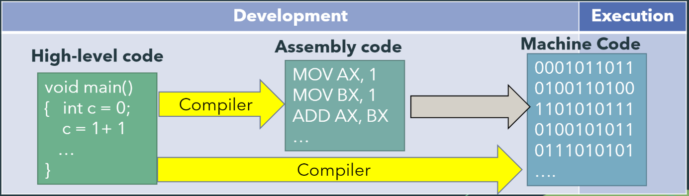
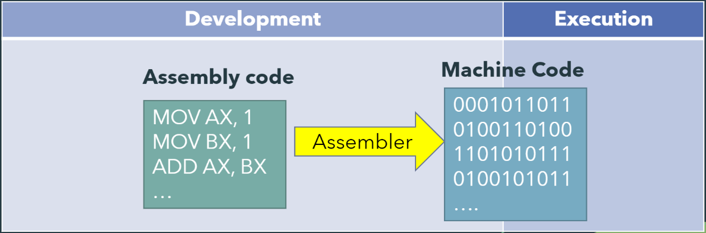
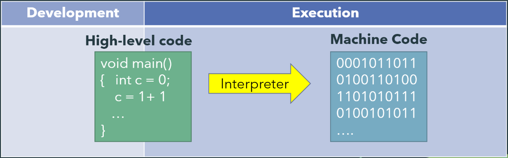

Development tools
Development tools are specialized software designed for creating software programs. These tools serve essential functions, including providing a conducive environment for programmers to write and manage their source code. Additionally, they play a crucial role in converting source code into machine-executable instructions.
Translators
To execute programs written in high-level source code, they must be converted into instructions that a CPU understands, commonly known as machine code or object code, using a translator. The types of translators include:
There are three types of translators;
- Compilers
- Assemblers
- Interpreters
Compilers
 Compilers translate high-level code into intermediate assembly code or directly into machine code to produce an executable file before a program is run.
Assemblers
 Assemblers translate assembly code into machine code to produce an executable file before a program is run. Utilizing an assembler results in the generation of an executable file from the code.
Interpreters
 Interpreters translate high level code one line at a time into machine code as the program is being run.
Integrated devlopment environments
An integrated development environment (IDE) furnishes programmers with a collection of software development tools, encompassing a source code editor, program build automation tools, debuggers, and code version control. Examples include DevC++, Eclipse, NetBeans, and VSCode.
Acquiring software
Software licenses
Using software necessitates obtaining its license and adhering to its end-user license agreement (EULA). When acquiring software, the payment involved is essentially for the license granting the right to use it.
Types of licenses
| Proprietary | Shareware/Freeware | Open Source (“Copyleft”) | Public Domain | |
|---|---|---|---|---|
| Copyright retained by publisher | Yes | Yes | Yes | No |
| Can acquire copy of code | No | No | Yes | Yes |
| Can modify the software | No | No | Yes | Yes |
| Can freely copy | No | Usually yes | Yes | Yes |
| Can freely distribute | No | Usually yes | Under same license | Yes |
Software installation
Most software executables require installation before they can run on a computer. Installing involves checking for system compatibility, unpacking software components, copying these components into appropriate folders, and storing user and computer settings needed to run the software correctly. When installing software, a user is often given the option for the following:
- Full installation (a.k.a. typical installation), which copies all commonly used files and programs from the distribution package to your computer and uses the default settings of the software.
- Custom installation, which allows a user to select only which components to install and to customize software settings.
Web software
Web-based applications are those that are hosted online by the vendor and are commonly accessible through a browser without requiring separate installation. Examples include Google Docs, Canvas, and Dropbox. This distribution model is also called Software as a Service (SaaS). Web-based applications may be offered free-of-charge or through a subscription-based payment scheme. The key advantage of SaaS is accessibility and compatibility across a wide range of hardware platforms.
Software piracy
Software piracy refers to unauthorized copying, distribution, and use of software. What constitutes piracy includes distributing copies of proprietary software to others, ’cracking’ software that would have otherwise been protected from illegal use, and using more copies of legitimately acquired software than what its End User License Agreement (EULA) permits.
Consequences of software piracy
Exposure to viruses, corrupt disk, or defective software, inadequate or no product documentation, no warranties, lack of technical support, and ineligibility for software upgrades offered for licensed users are potential risks associated with software piracy. Legal fines for software piracy may include violation of the IP Code of the Philippines RA 8293 and violation of the Optical Media Act RA 9239. Piracy is an ethical issue that leads to loss of income and jobs for the software industry and higher costs that legitimate users need to bear